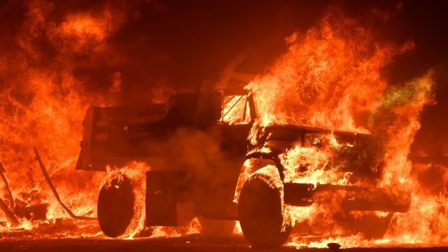

Tien doden door bosbranden in Californië.

Door hevige bosbranden in de Amerikaanse staat Californië zijn tien doden gevallen. De autoriteiten verwachten dat dit aantal nog gaat stijgen. Daarnaast zijn meer dan honderd mensen gewond geraakt en meer dan twintigduizend mensen geëvacueerd.
Dat melden de autoriteiten van Californië. De sheriff van Sonoma County meldt dat daar zeven mensen zijn omgekomen. In Napa County kwamen twee mensen om het leven en één slachtoffer overleed in Mendocino County, schrijft de Los Angeles Times. Twee ziekenhuizen die bedreigd worden door het vuur zijn ook ontruimd. Er worden ongeveer negenduizend huizen bedreigd door de bosbranden. Zeker 150 mensen moesten naar andere ziekehuizen worden gebracht. Ook zijn er in ieder geval 1.500 gebouwen en 230 vierkante kilometer grond in vlammen opgegaan. Eerder op de avond kondigde gouverneur Jerry Brown van Californië al de noodtoestand af in Napa County, Sonoma County en Yuba County. De branden woeden ten noorden van San-Francisco. Naast de branden in Noord-Californië is er ook een bosbrand in het zuiden van de staat, in de buurt van Anaheim. Daar is ongeveer twintig vierkante kilometer grond verloren gegaan.
Harde wind De brandweer heeft mede vanwege de harde wind moeite om de brandhaarden onder controle te krijgen. In Napa County en Sonoma County worden onder meer de bekende wijnstreken bedreigd. Ongewoon hoge temperaturen en ernstige droogte hebben in de voorbije maanden het brandgevaar in grote delen van het westen van de VS vergroot. In juli moesten door opgelaaide bosbranden in de buurt van het bekende Yosemite National Park vijfduizend mensen worden geëvacueerd.